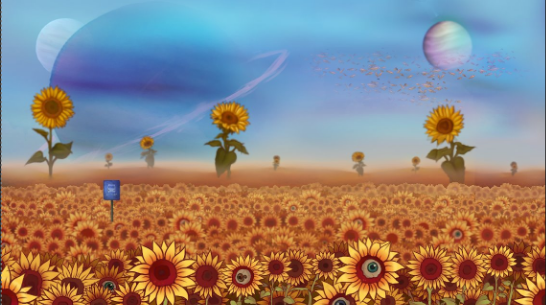
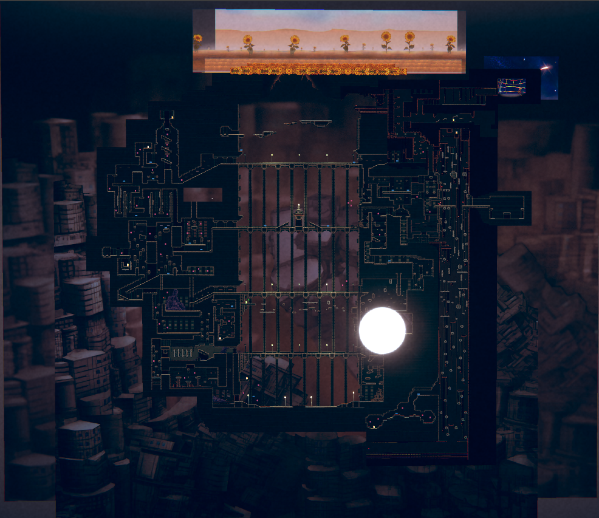
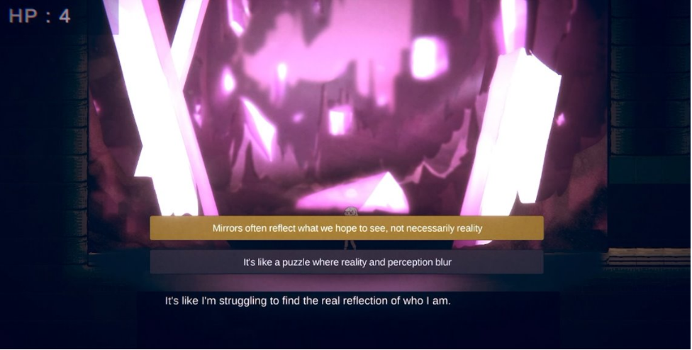

SunflowerFields Theme
Demure
Trailer
Gallery



Overview
Together with two designers, three artists, and one engineer, we created the story of Lily, a young girl dealing with neglect and abuse who finds strength by confronting nightmare creatures that embody her fears.
To support this narrative, I researched depression, mental health, and how dreams and the surreal can reflect our inner state. I also worked on more technical sound design with FMOD implementation, as well as level design and power mechanics to closely align gameplay with Lily's emotional journey.
A selection of tracks produced for Demure
Observatory Theme
ClockworkGarden Theme
Boss Theme